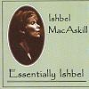

Celtic Lyrics Corner > Artists & Groups > Ishbel MacAskill > Essentially Ishbel > Piobaireachd Dhomhnuill Dhuibh
|  | Piobaireachd Dhomhnuill Dhuibh |
| Credits : | Traditional; arranged by Ishbel MacAskill |
| Appears On : | Essentially Ishbel |
| Language : | Gàidhlig (Scottish Gaelic) |
| Lyrics : | English Translation : |
| Pìobaireachd Dhòmhnuill Dhuibh | Pibroch of Black Donald |
| Pìobaireachd Dhòmhnuill | Pibroch of Donald |
| Pìobaireachd Dhòmhnuill Dhuibh | Pibroch of Black Donald |
| Pìobaireachd Dhòmhnuill | Pibroch of Donald |
| Pìobaireachd Dhòmhnuill Dhuibh | Pibroch of Black Donald |
| Pìobaireachd Dhòmhnuill | Pibroch of Donald |
| Pìob agus bratach | Pipe and banner |
| Air faich' Inbhir Lòchaidh | On the battlefield of Inverlochy |
| Chaidh an-diugh, chaidh an-diugh | Today, today |
| Chaidh an-diugh oirnne | Today went against us |
| Chaidh an-diugh, chaidh an-diugh | Today, today |
| Chaidh an-diugh oirnne | Today went against us |
| Chaidh an-diugh, chaidh an-diugh | Today, today |
| Chaidh an-diugh oirnne | Today went against us |
| Chaidh an-diugh, chaidh an-dè | Today, yesterday |
| 'S chaidh a h-uile latha oirnne | And every day went against us |
| Theich 's gun do theich | Fled, fled |
| 'S gun do theich Clann an Tòisich | Clan MacIntosh fled |
| Theich 's gun do theich | Fled, fled |
| 'S gun do theich Clann an Tòisich | Clan MacIntosh fled |
| Theich 's gun do theich | Fled, fled |
| 'S gun do theich Clann an Tòisich | Clan MacIntosh fled |
| Dh'fhalbh Clann Mhuirich | Clan MacMhuirich left |
| Ach dh'fhuirich Clann Dòmhnaill | But Clan Donald held firm |
| Nuair a rana' mi'm baile | With I arrived in the village |
| Cha robh caithream no ceòl ann | There was no celebration or music |
| Cha robh pìoban gan spreigeadh | The pipes were not being tuned up |
| Cha robh farum an òil ann | There was no merry drinking |
| Bha mo chruit fhìnealt | My fine harp lay |
| Na sìneadh an ordan | Stretched out and ordered |
| Is lèine dhen anart | The sound of the music |
| Mu farum a meòirean | Was shrouded in linen |
| Pìobaireachd Dhòmhnuill Dhuibh | Pibroch of Black Donald |
| Pìobaireachd Dhòmhnuill | Pibroch of Donald |
| Pìobaireachd Dhòmhnuill Dhuibh | Pibroch of Black Donald |
| Pìobaireachd Dhòmhnuill | Pibroch of Donald |
| Pìobaireachd Dhòmhnuill Dhuibh | Pibroch of Black Donald |
| Pìobaireachd Dhòmhnuill | Pibroch of Donald |
| Pìob agus bratach | Pipe and banner |
| Air faich' Inbhir Lòchaidh | On the battlefield of Inverlochy |